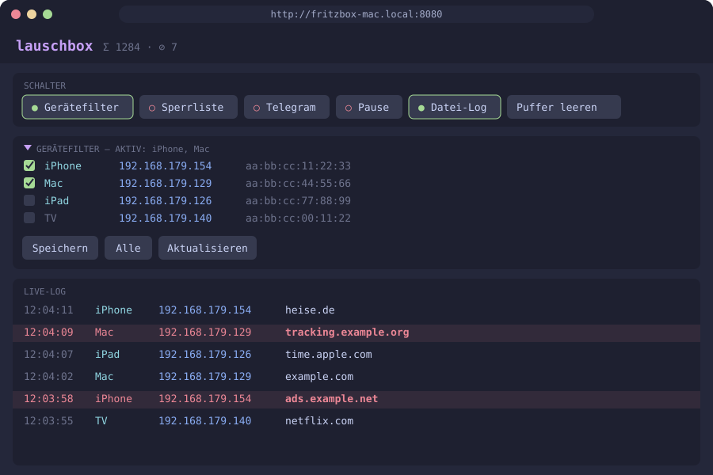

Live-Log in Echtzeit
Uhrzeit · Gerät · IP · Domain. Scrollen per Pfeiltasten, Bild-Tasten oder Mausrad — beim Hochscrollen pinnt die Ansicht, das Log läuft im Hintergrund weiter. Dazu Sparkline, Live-Rate und Zähler in der Statusleiste.
DNS-Live-Log für die FRITZ!Box — direkt im Terminal. Sieh in Echtzeit, welches Gerät welche Domain auflöst. Mit Gerätefilter, Sperrliste, Telegram-Alarm und Statistik. Nichts wird auf der Box installiert.
curl -fsSL … | sh
macOS & Linux · installiert nach ~/.local/bin · Konfiguration in ~/.config/lauschbox
Features
Uhrzeit · Gerät · IP · Domain. Scrollen per Pfeiltasten, Bild-Tasten oder Mausrad — beim Hochscrollen pinnt die Ansicht, das Log läuft im Hintergrund weiter. Dazu Sparkline, Live-Rate und Zähler in der Statusleiste.
Checkbox-Liste aller Geräte der Box — auch offline. Filter per MAC, gilt für IPv4 und IPv6.
Treffer rot markiert oder „nur Treffer“. Subdomains matchen automatisch, hosts-Format wird verstanden.
Push bei jedem Treffer — mit Cooldown gegen Flut, asynchron, ohne die Anzeige zu bremsen.
Bricht die Aufzeichnung ab, meldet sich lauschbox mit Backoff neu an. Beim Beenden wird alles sauber gestoppt.
Top-Domains, aktivste Geräte und Treffer als Balkendiagramm — direkt im Menü.
Taste l schreibt jede Anfrage zusätzlich in eine Textdatei — Treffer mit Marker.
Taste w startet eine Weboberfläche (Port 8080): Schalter, Geräteauswahl und Live-Log im Browser, auch mobil. Ohne Login — nur im vertrauenswürdigen Heimnetz nutzen.
Kein Cloud-Dienst, nichts auf der Box. Passwort und Token landen nicht in der Prozessliste; Configs mit chmod 600.
Catppuccin-Macchiato-Farben, passt sich der Fenstergröße an. --no-color für Purist:innen.
Funktionsweise
Liefert die Paketaufzeichnung als Stream (capture_notimeout) — ein Feature, das die Box ohnehin mitbringt.
Filtert lokal auf deinem Rechner nur die DNS-Anfragen heraus und liefert Quell-MAC, IP und Domain.
Löst Gerätenamen auf, wendet Gerätefilter & Sperrliste an, zeigt live an — und schlägt per Telegram Alarm.
Setup
brew install wireshark python curl figlet
sudo apt-get install tshark python3 curl figlet
figlet ist optional (großes Banner). Fehlende Pflicht-Tools meldet lauschbox beim Start samt Installationsbefehl. Root-Rechte sind nicht nötig.
curl -fsSL … | sh
oder klassisch:
git clone https://github.com/forbidden-fruits/lauschbox cd lauschbox ./lauschbox
Weitere Punkte: [5] Sperrliste anzeigen · [6] Statistik · [7] Logdatei Pfad (Ziel des Datei-Logs) · [8] Web-UI Port · [9] Ende. Der aktuelle Log-Pfad steht im Kopf des Hauptmenüs.
Direkt ins Log starten: lauschbox --log
Bedienung
Beim Hochscrollen friert die Ansicht ein. Neue Einträge werden weiter gesammelt und in der Statusleiste gezählt — Ende bringt dich zurück.
Online-Geräte ●, offline ○; WLAN 📶, LAN 🔌, Gast 👥. Ohne Auswahl gilt „Alle Netzwerkgeräte“.
/newbot) → Token/start schickengetUpdatesIm Log: s (Sperrliste) an, dann t.
Web-UI
Taste w im DNS-Logging startet eine Weboberfläche. Sie spiegelt die Schalter des Terminals, lässt dich Geräte auswählen und zeigt das Live-Log — am Rechner genauso wie am Handy.

http://<Rechnername>:8080 (Beispieldaten)lauschbox -l)w ● und die Adressehttp://<Rechnername>:8080 öffnenPort ändern: Menü [8] oder WEB_PORT in der lauschbox.env. Die Web-UI läuft nur, solange das Logging aktiv ist.
⚠️ Keine Anmeldung, lauscht auf allen Interfaces — nur im vertrauenswürdigen Heimnetz einschalten.
Konfiguration
lauschbox sucht jede Datei zuerst im aktuellen Verzeichnis, danach unter
~/.config/lauschbox/. Neue Dateien landen dort, wo sie gefunden wurden — sonst in
~/.config/lauschbox/. Die .env-Dateien werden nur gelesen, nie als Shell-Code ausgeführt.
| Datei | Inhalt |
|---|---|
.fritzbox.env | FB_IP, FB_USER, FB_PASS |
.telegram.env | TG_TOKEN, TG_CHAT_ID |
.devices.env | DEVICE_FILTER (MACs oder ALL), DEVICE_FILTER_NAMES |
blocklist.txt | Sperrliste |
lauschbox.env | Einstellungen (rechts) · LOG_FILE auch über Menü [7] |
dns.log | Datei-Log (Taste l) |
⚠️ Die .env-Dateien enthalten Klartext-Zugangsdaten (Rechte 600) — nicht committen.
# Kommentar
example.com
tracking.example.org
*.ads.example.net
0.0.0.0 telemetry.example.com
Eine Domain pro Zeile · example.com trifft auch www.example.com · hosts-Format & *. werden verstanden · Änderungen greifen beim Einschalten mit s.
# Scrollback-Puffer im Log LOG_MAX_LINES=1000 # Zeilen in der Sperrlisten-Ansicht BLOCKLIST_MAX_LINES=1000 # Aufzeichnungs-Interface der Box CAPTURE_IFACE=1-lan # Doppelte Anfragen ausblenden (Sek.) DEDUPE_SECS=2 # Telegram: gleicher Treffer frühestens nach n Sek. NOTIFY_COOLDOWN=30 # Gerätenamen auffrischen alle n Sek. DEVICE_REFRESH_SECS=300 # Port der Web-UI (Taste w), 1024-65535 — auch über Menü [8] setzbar WEB_PORT=8080 # Datei-Log (absoluter Pfad) — auch über Menü [7] "Logdatei Pfad" setzbar LOG_FILE=/Users/du/.config/lauschbox/dns.log
| Variable | Standard |
|---|---|
LOG_MAX_LINES | 1000 |
BLOCKLIST_MAX_LINES | 1000 |
CAPTURE_IFACE | 1-lan |
DEDUPE_SECS | 2 (0 = aus) |
NOTIFY_COOLDOWN | 30 (0 = aus) |
DEVICE_REFRESH_SECS | 300 (0 = aus) |
WEB_PORT | 8080 |
LOG_FILE | ~/.config/lauschbox/dns.log |
Ungültige Werte fallen auf den Standard zurück. Farben aus: --no-color oder NO_COLOR=1.
FAQ & Grenzen
Nur DNS-Anfragen, die bei der FRITZ!Box ankommen. Unsichtbar bleiben DNS-Cache-Treffer auf dem Gerät, verschlüsseltes DNS (DoH/DoT im Browser), iCloud Private Relay und VPN-Clients. Geloggt wird die angefragte Domain — nicht der Seiteninhalt.
Einen Benutzer mit Passwort verwenden (nicht „nur Kennwort“), Recht „FRITZ!Box Einstellungen“ vergeben und nach Fehlversuchen die BlockTime der Box abwarten.
Prüfe, ob TR-064 freigeschaltet ist („Zugriff für Anwendungen zulassen“) und ob die IP stimmt.
Ist der Gerätefilter aktiv (g drücken)? Kam die Antwort aus dem DNS-Cache? Nutzt das Gerät DoH, Private Relay oder VPN?
Bot per /start kontaktiert? Chat-ID korrekt? Sperrliste (s) und Telegram (t) an?
Derselbe Treffer wird höchstens alle 30 s gemeldet (NOTIFY_COOLDOWN).
Nur solange lauschbox läuft. Beim Beenden — auch per Ctrl+C — wird sie wieder gestoppt.
reset oder stty sane eingeben.
curl -fsSL … | sh
Ein Befehl. Ein Terminal. Dein ganzes Netzwerk im Blick.